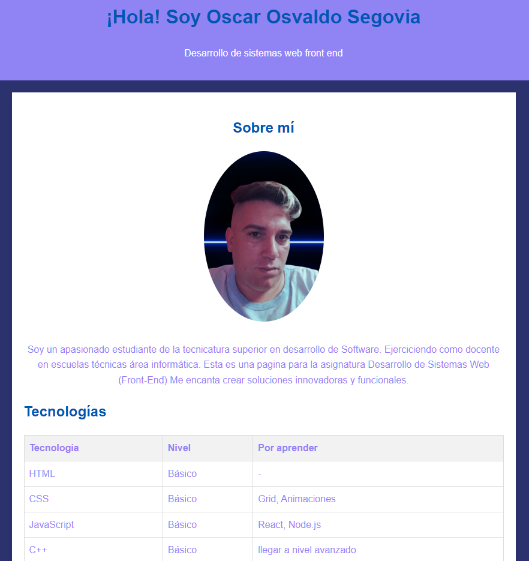

Detalles del Proyecto
Este proyecto se centró en la mejora visual de mi primer portafolio. La principal modificación fue la implementación de una paleta de colores basada en tonos lila pastel, buscando una estética más suave, moderna y profesional.
Además del cambio de colores, trabajé en la mejora de la tipografía y el espaciado para optimizar la legibilidad y la experiencia del usuario. Este proyecto me permitió profundizar en el uso de propiedades CSS avanzadas y entender la importancia de la coherencia visual.
Tecnologías Utilizadas:
- HTML5: Estructura mejorada.
- CSS3: Enfoque en diseño, colores y tipografía.